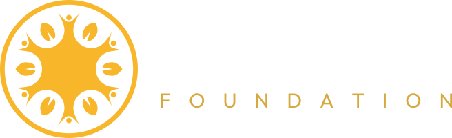

شمسہ فاؤنڈیشن پاکستان میں ایک غیر منافع بخش سماجی بہبود کا ادارہ ہے۔ یہ تعلیم، بنیادی صحت، راشن اور روزگار کے ہنر کے ذریعے ضرورت مند خاندانوں کی مدد کرتی ہے۔ اسے مقامی رضاکار چلاتے ہیں اور عطیہ دہندگان اس کا خرچ اٹھاتے ہیں۔ ہر عطیے کی تحریری رسید دی جاتی ہے۔
شمسہ فاؤنڈیشن پاکستان میں سماجی بہبود کا ایک ادارہ ہے۔ اپنے نام کے سورج کی طرح یہ ہر گھر تک پہنچتی ہے: ہم ضرورت مند خاندانوں کی تعلیم، بنیادی صحت، راشن اور روزگار کے ہنر میں مدد کرتے ہیں، مقامی رضاکاروں کے ساتھ مل کر۔
اسکول کی فیس، کتابیں اور یونیفارم، تاکہ بچے اسکول میں رہیں۔
مفت میڈیکل کیمپ، دوائیں اور ان خاندانوں کے لیے ریفرل جو خرچ نہیں اٹھا سکتے۔
ماہانہ راشن پیک، رمضان اور ہنگامی امداد۔
سلائی، کمپیوٹر اور ہنر کی تربیت، تاکہ خاندان اپنی روزی خود کما سکیں۔
ہمارے نشان میں لوگوں کا دائرہ: ہم برادری کے ساتھ کام کرتے ہیں، اس کی جگہ نہیں۔
مدد عزت کے ساتھ دی جاتی ہے۔ اجازت کے بغیر کسی کا چہرہ یا نام نہیں دکھاتے۔
ہر روپیہ درج ہوتا ہے، ہر عطیہ دہندہ کو رسید ملتی ہے، اور ہم بتاتے ہیں کہ مدد کہاں پہنچی۔
| ویب | www.shamsafoundation.org |
| ای میل | info@shamsafoundation.org |
| فون | +92 300 0000000 |
| پتہ | Address line, City, Pakistan |
رابطے کی معلومات تصدیق تک عارضی ہیں۔